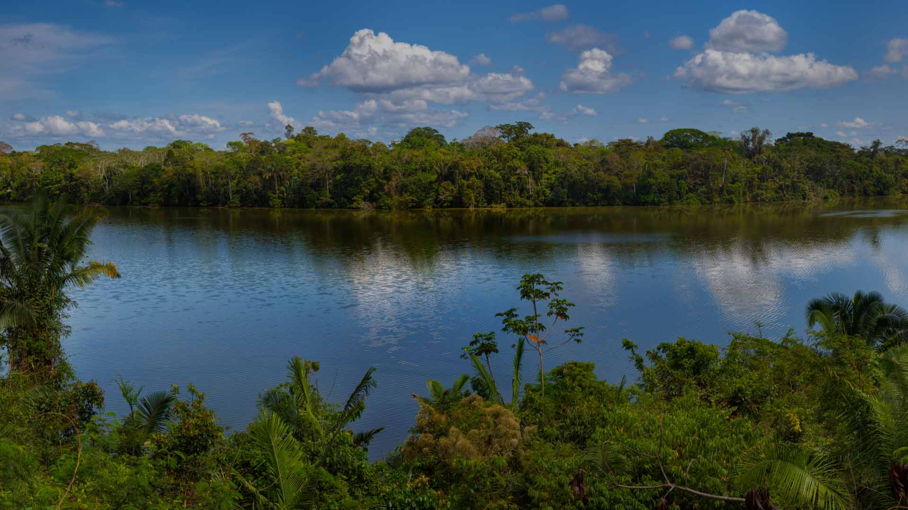
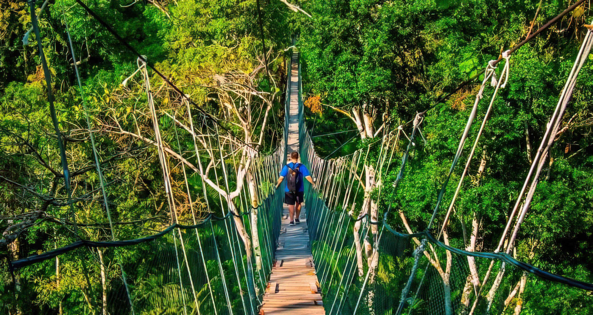

4 días y 3 noches - Tambopata Jungle
Madre de Dios Region,Perú
- 
- 

Aventúrese en las profundidades de la selva amazónica y explore el diverso Parque Nacional Tambopata en una excursión de 4 días desde Puerto Maldonado. Descubra la rica biodiversidad de la selva mientras recorre los paseos nocturnos de los caimanes, visite la Isla de los Monos, navegue por el lago Sandoval y emprenda algunas excursiones por la selva. Esta es una gran oportunidad para desconectar y sumergirse en la hermosa naturaleza del Perú durante su viaje
Llegada al aeropuerto de Puerto Maldonado. Disfruta un -Paseo en bote de 25 minutos hasta el albergue Inkaterra Hacienda Concepción. Adéntrate en las profundidades de la selva tropical con Concepción Senderos para caminar por la jungla y tomar un crucero por el río Crepúsculo como nocturno criaturas despiertas. Noche en el albergue.
Camina por la selva tropical y deslízate por el lago cristalino Sandoval. Escale el Inkaterra Canopy Walkway para obtener una panorámica vistas y observar la actividad secreta de la vida silvestre en la oscuridad explorando la selva tropical por la noche. Noche en el albergue.
Descubre muchas de las plantas tropicales de la selva. de cerca en nuestro bio-huerto orgánico seguido de una visita a Palmetum, una colección de 19 palmeras amazónicas. Remar en un cocha, un lago con arco de buey y pesca de pirañas. Visita al interior Collpa. Noche en el albergue.
Salga en bote desde su albergue junto al río, visitando un Casa de las Mariposas antes de tu vuelo de salida desde Puerto Maldonado. ¡Fin de nuestro servicio!